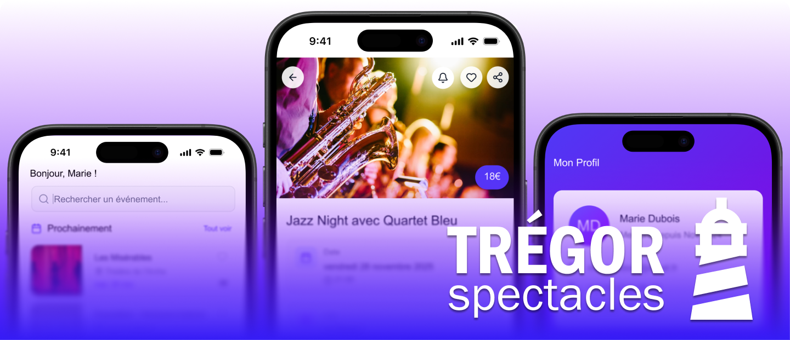
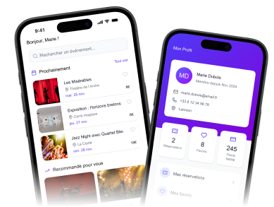
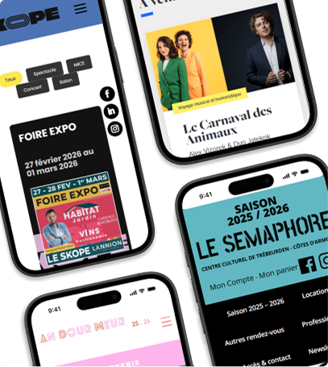
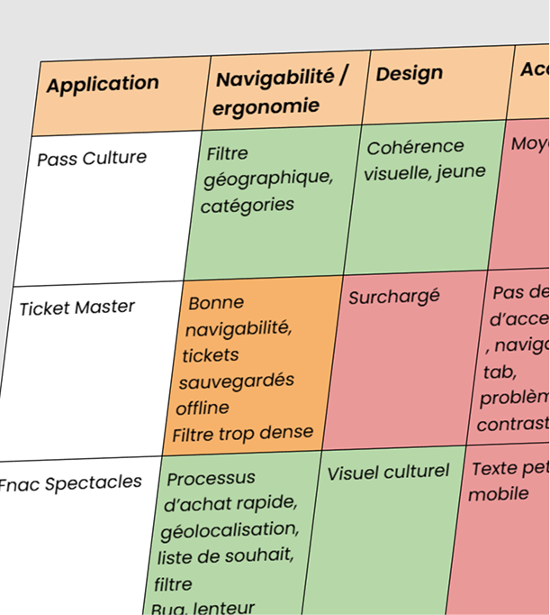
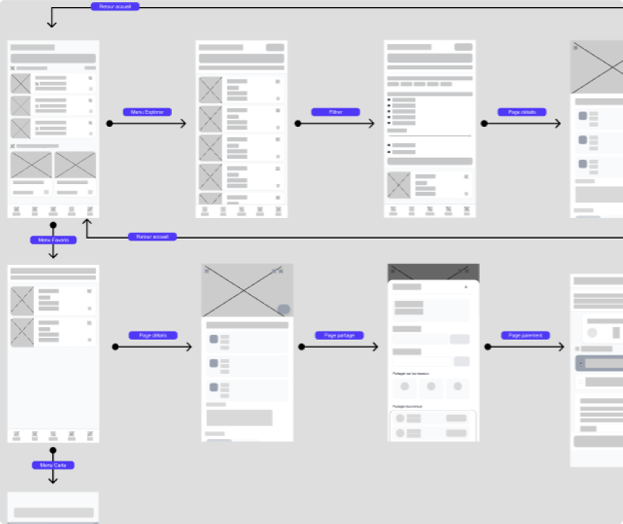
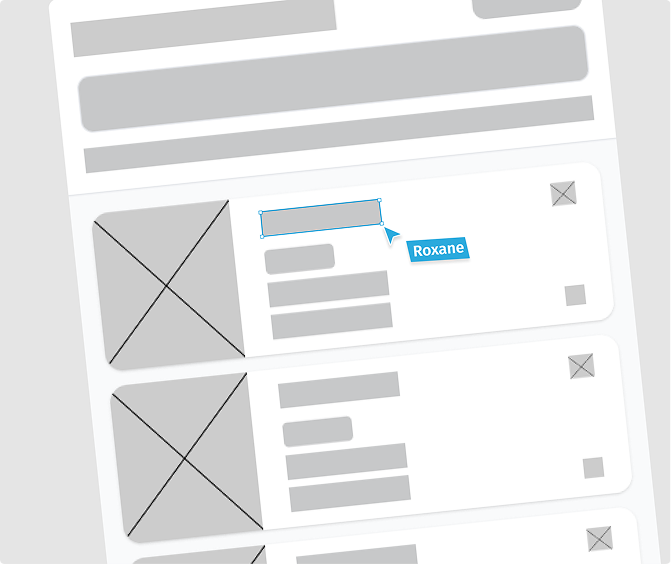
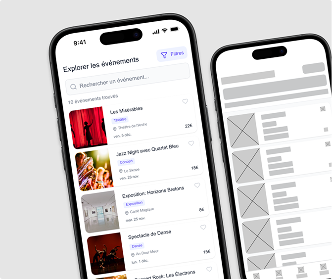
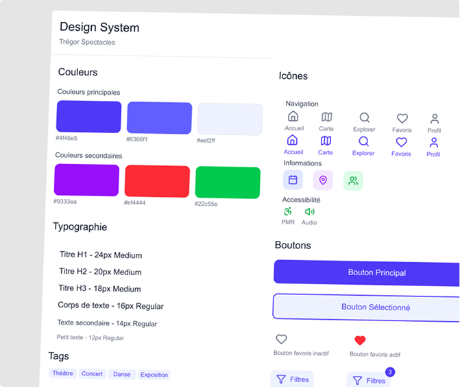
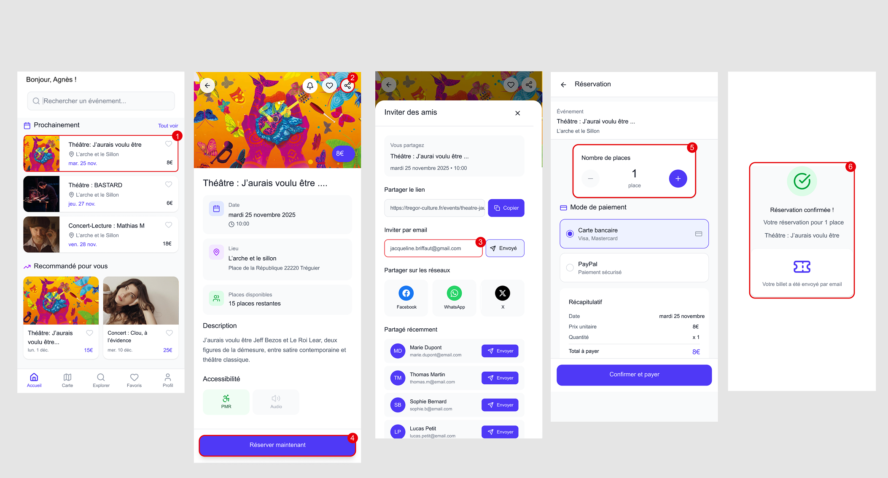

CONTEXTE
Afin de faciliter l'accès et promouvoir l'activité culturelle dans le Trégor, l’exercice consiste à produire une maquette mobile qui agrège la programmation des 5 principales salles de spectacles dans le Trégor.
OUTILS UTILISÉS
Figma
Wireframes, prototypes

étapes
Planification : Analyse des salles du Trégor

Pour concevoir la maquette mobile, j'ai débuté par un
audit des sites web des salles
du Trégor. L'objectif est d’identifier les pain points et les
opportunités
d'amélioration.
Ainsi, je me suis intéressée à ces trois critères :
Après mes recherches, je remarque qu’il y a un manque de clarté et de navigabilité
dans les sites web.
De ce fait, mon but est de créer une interface intuitive, accessible
et qui réunit
toutes les programmations des événements du territoire.
Je souhaite aussi rajouter des fonctionnalités comme : le mode
hors-ligne pour avoir
ses billets à disposition, une carte pour savoir quelle salle est à
proximité, un
moyen pour partager les événements et des préférences
enregistrée pour une
expérience personnalisée.
Benchmark : Analyse concurentielle

Une fois l’audit des sites terminé, j'ai élargi mon champ d'analyse aux standards du
marché (Pass Culture, Ticketmaster, Fnac Spectacles).
L'objectif est d'identifier les fonctionnalités indispensables et
d'éviter les
erreurs des grandes plateformes.
J'ai évalué ces services selon ces critères :
Ce que j’ai retenu :
- Navigabilité : : Ticketmaster est un modèle populaire mais est très surchargé. Je privilégie une approche plus épurée comme le Pass Culture.
- Inclusivité : Le Pass Culture met en avant l’inclusion des jeunes en situation de handicap, je vais plus loin en intégrant des infos d’accessibilité propres à chaque lieu.
- Ancrage Local : Les applications comme Fnac Spectacles sont trop nationales, il y a une opportunités à prendre sur le local et mettre en avant les plus petites salles.
Génération : Conception de l'interface


Pour harmoniser la programmation des 5 salles, j'ai conçu des wireframes axés sur la clarté et la navigabilité. J'ai mis en place une structure de intuitive et pensée pour garantir un accès rapide aux informations essentielles.


Pour l’identité visuelle, je me suis inspirée de l’univers du Pass Culture. Ce choix permet de créer un lien avec un service déjà identifié d’avoir un aspect dynamique et épuré.
Parcours utilisateur : Exemple

Pour valider l'interface, j'ai modélisé des scénarios de vie réelle. Par exemple, le parcours d’Agnès, qui souhaite voir une pièce de théâtre avec son amie Jacqueline. Ce flux met en avant la fonctionnalité de partage et la simplicité de la réservation.
CE QUE JE RETIENS
Le projet Trégor Spectacles m’a permis de centraliser les données de cinq structures différentes en une seule application. L’enjeu pour moi était de transformer toutes les informations en un parcours fluide et intuitif pour les utilisateurs. Ainsi, j’ai réalisé qu'un bon design repose sur une structure logique capable de résoudre des problématiques réelles.